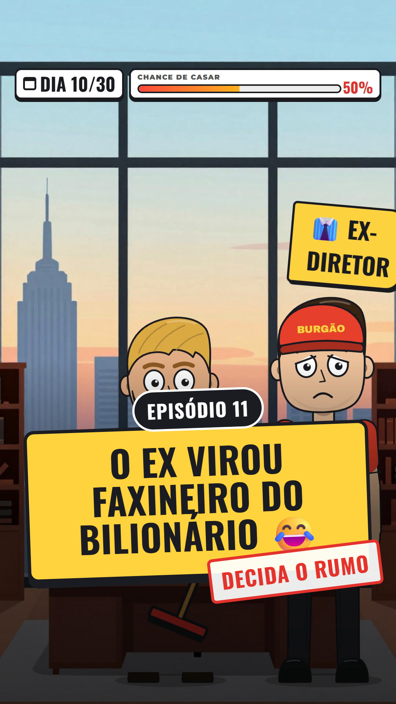
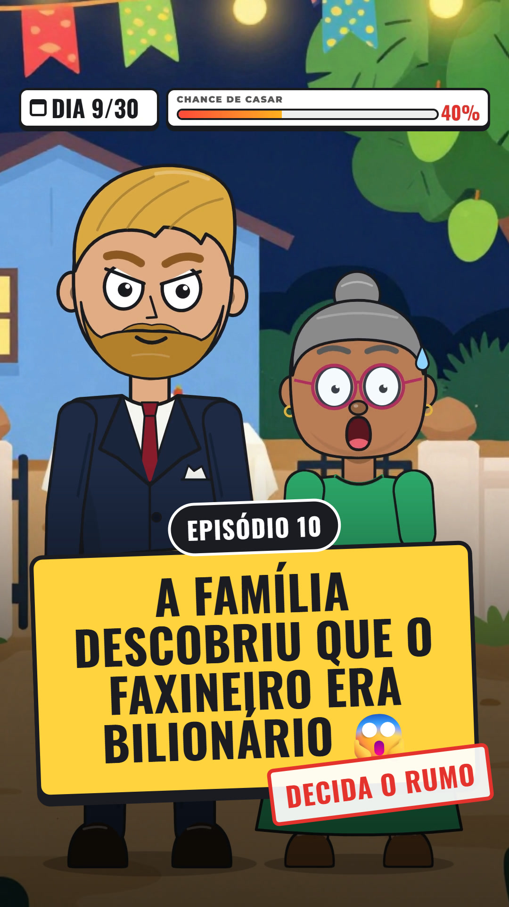

2026-11-19-mendigo-ep11Esse cara era DIRETOR. Hoje ele passa rodo no chão do faxineiro que ele humilhou. 😂🧹 Vocês mandaram o Tuca esperar. E na frente da cidade inteira ele disse: "Eu só caso quando ela me perdoar. Mas, se dependesse de mim, era hoje." 🥹 A cidade fez "ownnn". A Dona Socorro: "Gente, o bolo já tá pago!" 🎂 Na segunda-feira, o Murilo chegou com flores: "Chefinho!" 💐 O Tuca: "Você pagou as panelas da vó com o cartão da empresa. Vai pagar trabalhando. No Burgão. Na minha vaga." 🍔 Ele escorregou no primeiro dia. E a Vanessa largou ele por áudio. 💔 Só que, à noite, limpando a sala do Seu Otávio, o Murilo achou uma pasta com o nome do Arthur... 📁👀 E a Lara: "Se você quer o meu perdão, me leva pra jantar." O que o Tuca faz? 🍔 TUCA: vai de faxineiro, lanche na praça, do jeito que ela conheceu 🍷 ARTHUR: vai de bilionário, restaurante mais caro da cidade Comenta uma palavra. A mais votada vira o episódio 12! 👇 Segue a página pra não perder o episódio 12! ✅ E manda pra aquela amiga que ia amar ver o ex passando rodo. 😂 #novelinha #historia #desenhoanimado #milionario #romance #decidaorumo

2026-11-18-mendigo-ep10E se a sua mãe descobrisse que o seu namorado pobre, na verdade, é milionário? 😱 Vocês mandaram a Lara contar. E ela contou TUDO. 📣 Primeiro: "O meu noivo de verdade era o Murilo… e ele me traiu com a Vanessa." 💔 A família inteira virou pra prima. 👀 Depois: "O Tuca não é faxineiro. É o Arthur Valente, o dono da Valente Motors." 💰 O Murilo deixou cair as panelas: "Eu trabalho pra ele!" 🍳😂 E a vó: "Ainda bem que não foi o das panelas." 👵 Na manhã seguinte, a cidade inteira tava no portão. E um repórter perguntou: "O senhor vai casar com a Lara no dia 30?" 🎙️ E agora, o que o Tuca faz? 💍 CONFIRMA: assume o casamento na frente da cidade (mesmo com a Lara ainda magoada) ⏳ ESPERA: diz que só casa quando ela perdoar (e a Dona Socorro passa vergonha) Comenta uma palavra. A mais votada vira o episódio 11! 👇 Segue a página pra não perder o episódio 11! ✅ E marca aquela amiga que espalharia pra cidade inteira igual a Dona Socorro. 😂 #novelinha #historia #desenhoanimado #milionario #romance #decidaorumo
E se você tivesse que ser traída… pra encontrar o amor de verdade? 💔❤️ A Lara foi. E o amor de verdade tava esfregando o chão do Burgão. 🧹 De volta da praia, a família inteira gritou: "BEIJA! BEIJA! BEIJA!" 😂 A vó: "Eu não tenho a vida toda, não! Beija logo!" 👵 O Tuca se declarou… e a Lara beijou. 💋 Só que, logo depois, veio a verdade: "Meu nome não é Tuca. É Arthur. Arthur Valente." 😱 "Eu inventei um noivo pra minha mãe… e o noivo inventado mentiu mais que eu!" 😤 E aí a Dona Socorro chegou: "Por que a minha filha tá chorando?" 👀 E agora, o que a Lara faz? 📣 CONTA: conta pra família que ele é o Arthur Valente (e a Dona Socorro espalha pra cidade inteira) 🤫 SEGREDO: guarda segredo e protege ele (e passa a mentir pra própria mãe) Comenta uma palavra. A mais votada vira o episódio 10! 👇 Segue a página pra não perder o episódio 10! ✅ E marca aquela amiga que precisou ser traída pra achar o amor de verdade. 😏 #novelinha #historia #desenhoanimado #milionario #romance #decidaorumo